library(igraph)7.1 Lernziele
Nach diesem Kapitel können Sie:
- erklären, was Knoten und Kanten in einem Netzwerk bedeuten,
- Netzwerke als Kantenliste, Knotenliste und Adjazenzmatrix darstellen,
- Netzwerkdaten aus CSV-Dateien einlesen und prüfen,
- doppelte Kanten erkennen und zu gewichteten Kanten verdichten,
- aus Knoten- und Kantendaten ein
igraph-Objekt erzeugen, - einfache Netzwerkvisualisierungen mit
plot()erstellen, - Layouts, Farben, Labels, Knotengrößen und Kanteneigenschaften gezielt einsetzen,
- einfache Netzwerkkennzahlen wie den Grad für Visualisierungen nutzen.
7.2 Setup
Für die folgenden Beispiele verwenden wir das Paket igraph.
NoteHinweis
Das Paket igraph eignet sich sowohl für die Analyse als auch für die Visualisierung von Netzwerken. Für kleine bis mittlere Beispiele im Unterricht ist es besonders praktisch, weil Datenstruktur, Analyse und Visualisierung direkt in R verbunden werden können.
8 Netzwerk-Repräsentationen
Bisher haben wir vor allem klassische Diagramme betrachtet, zum Beispiel Histogramme, Boxplots oder Streudiagramme. Diese Diagramme eignen sich gut, wenn einzelne Variablen oder Zusammenhänge zwischen zwei metrischen Variablen untersucht werden sollen.
Manche Daten haben jedoch eine andere Struktur: Sie bestehen aus Objekten und Beziehungen zwischen diesen Objekten. Solche Daten können als Netzwerk dargestellt werden.
Typische Beispiele sind:
- Personen und ihre Freundschaften,
- Gene und gemeinsame Expressionsmuster,
- Flughäfen und Flugverbindungen,
- Begriffe und ihre gemeinsamen Vorkommen,
- Unternehmen und ihre Geschäftsbeziehungen,
- Patientinnen und Patienten und mögliche Kontakt- oder Übertragungsketten.
In einem Netzwerk werden die Objekte als Knoten dargestellt. Die Beziehungen zwischen ihnen werden als Kanten dargestellt.
NoteGrundbegriffe
Ein Knoten steht für ein Objekt, zum Beispiel eine Person, eine Webseite oder einen Ort.
Eine Kante steht für eine Beziehung zwischen zwei Knoten, zum Beispiel eine Freundschaft, eine Verbindung oder eine Interaktion.
8.1 Kantenliste
Eine häufige Repräsentation eines Netzwerks ist die Kantenliste. Dabei beschreibt jede Zeile eine Verbindung zwischen zwei Knoten.
Im folgenden Beispiel betrachten wir ein kleines soziales Netzwerk. Die Knoten sind Personen. Eine Kante bedeutet, dass zwei Personen miteinander verbunden sind.
verbindungen <- data.frame(
von = c("Anna", "Anna", "Ben", "Ben", "Clara", "David", "Eva", "Eva", "Fatima"),
zu = c("Ben", "Clara", "Clara", "David", "Eva", "Eva", "Fatima", "Gustav", "Gustav")
)
verbindungen von zu
1 Anna Ben
2 Anna Clara
3 Ben Clara
4 Ben David
5 Clara Eva
6 David Eva
7 Eva Fatima
8 Eva Gustav
9 Fatima GustavDer Datensatz besteht aus zwei Spalten:
von: erster Knoten der Beziehung,zu: zweiter Knoten der Beziehung.
Aus dieser Kantenliste können wir direkt ein Netzwerkobjekt erstellen.
g_klein <- graph_from_data_frame(verbindungen, directed = FALSE)
g_kleinIGRAPH e4cf820 UN-- 7 9 --
+ attr: name (v/c)
+ edges from e4cf820 (vertex names):
[1] Anna --Ben Anna --Clara Ben --Clara Ben --David Clara --Eva
[6] David --Eva Eva --Fatima Eva --Gustav Fatima--Gustav
TipKurz gesagt
Eine Kantenliste ist meist die einfachste Form, ein Netzwerk in einer Tabelle zu speichern: Jede Zeile beschreibt eine Beziehung.
8.2 Gerichtete und ungerichtete Netzwerke
Bei einem ungerichteten Netzwerk ist nur wichtig, dass zwei Knoten verbunden sind. Die Richtung spielt keine Rolle.
Beispiel: Wenn Anna mit Ben befreundet ist, wird meist angenommen, dass Ben auch mit Anna befreundet ist.
g_ungerichtet <- graph_from_data_frame(verbindungen, directed = FALSE)
plot(g_ungerichtet)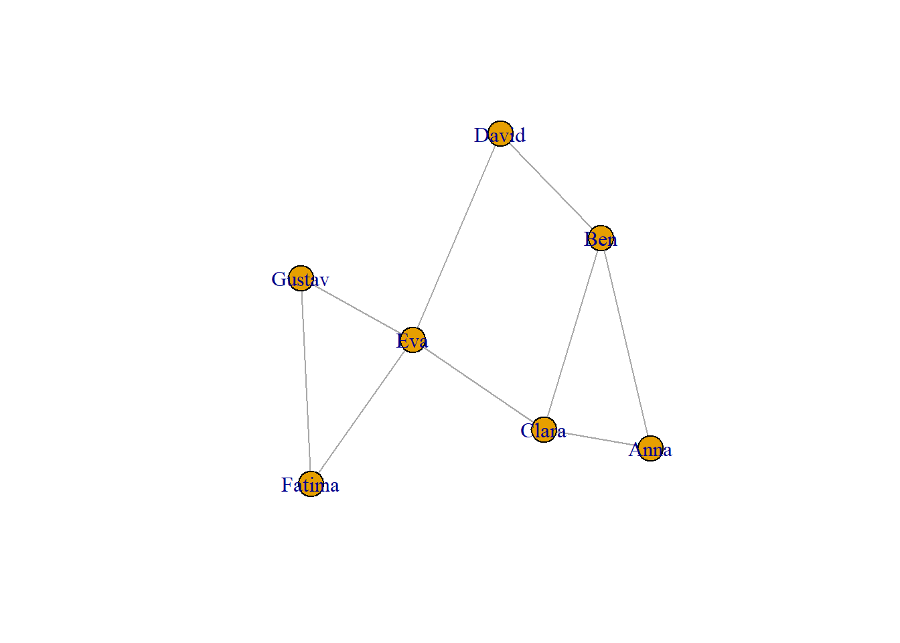
Bei einem gerichteten Netzwerk hat jede Kante eine Richtung.
Beispiel: Wenn Person A Person B folgt, muss Person B nicht automatisch Person A folgen.
g_gerichtet <- graph_from_data_frame(verbindungen, directed = TRUE)
plot(g_gerichtet)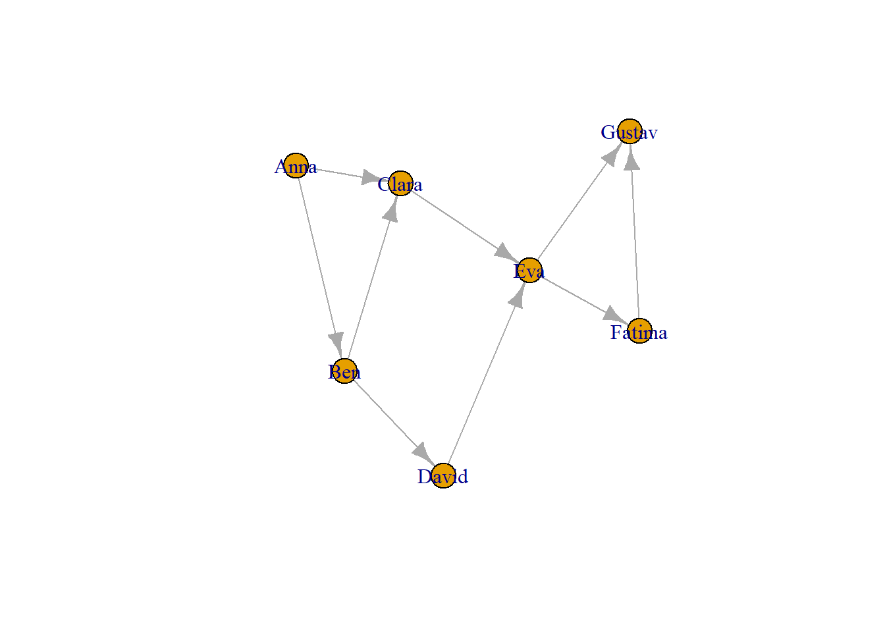
NoteInterpretation
In einem gerichteten Netzwerk bedeutet A -> B: Die Beziehung geht von A nach B.
In einem ungerichteten Netzwerk bedeutet A -- B: Zwischen A und B besteht eine Verbindung, aber ohne Richtung.
8.3 Knotenliste
Neben der Kantenliste kann es eine Knotenliste geben. Sie enthält Zusatzinformationen über die Knoten.
personen <- data.frame(
name = c("Anna", "Ben", "Clara", "David", "Eva", "Fatima", "Gustav"),
gruppe = c("A", "A", "A", "B", "B", "B", "B"),
alter = c(22, 24, 21, 25, 23, 22, 26)
)
personen name gruppe alter
1 Anna A 22
2 Ben A 24
3 Clara A 21
4 David B 25
5 Eva B 23
6 Fatima B 22
7 Gustav B 26Wenn wir die Knotenliste beim Erzeugen des Netzwerks übergeben, werden die zusätzlichen Spalten als Knotenattribute gespeichert.
g_attr <- graph_from_data_frame(
d = verbindungen,
vertices = personen,
directed = FALSE
)
V(g_attr)$gruppe[1] "A" "A" "A" "B" "B" "B" "B"V(g_attr)$alter[1] 22 24 21 25 23 22 26
ImportantWichtig
Die erste Spalte der Knotenliste muss die Knoten eindeutig identifizieren. Diese Werte müssen zu den Knotenbezeichnungen in der Kantenliste passen.
8.4 Adjazenzmatrix
Eine andere Repräsentation eines Netzwerks ist die Adjazenzmatrix. Dabei stehen die Knoten sowohl in den Zeilen als auch in den Spalten. Eine 1 bedeutet: Es gibt eine Kante. Eine 0 bedeutet: Es gibt keine Kante.
A <- as_adjacency_matrix(g_klein, sparse = FALSE)
A Anna Ben Clara David Eva Fatima Gustav
Anna 0 1 1 0 0 0 0
Ben 1 0 1 1 0 0 0
Clara 1 1 0 0 1 0 0
David 0 1 0 0 1 0 0
Eva 0 0 1 1 0 1 1
Fatima 0 0 0 0 1 0 1
Gustav 0 0 0 0 1 1 0Aus einer Adjazenzmatrix kann man ebenfalls ein Netzwerk erzeugen.
g_aus_matrix <- graph_from_adjacency_matrix(
A,
mode = "undirected",
diag = FALSE
)
g_aus_matrixIGRAPH e50dda7 UN-- 7 9 --
+ attr: name (v/c)
+ edges from e50dda7 (vertex names):
[1] Anna --Ben Anna --Clara Ben --Clara Ben --David Clara --Eva
[6] David --Eva Eva --Fatima Eva --Gustav Fatima--Gustav
TipInterpretation
Die Adjazenzmatrix zeigt sehr direkt, welche Knoten miteinander verbunden sind. Sie ist besonders nützlich, wenn man mit Netzwerken rechnerisch arbeiten möchte.
8.5 Netzwerke aus Dateien einlesen
In echten Projekten werden Netzwerke meist nicht direkt im R-Skript erzeugt. Stattdessen liegen die Daten in Dateien vor. Häufig gibt es eine Datei mit Knoten und eine Datei mit Kanten.
Dieses Vorgehen orientiert sich an der typischen Struktur aus Netzwerk-Tutorials mit igraph: Zuerst werden eine Knoten-Datei und eine Kanten-Datei mit read.csv() eingelesen. Danach werden die Daten geprüft, doppelte Kanten verdichtet und schließlich mit graph_from_data_frame() in ein igraph-Objekt umgewandelt.
In diesem Kapitel verwenden wir zwei CSV-Dateien:
characters.csv: Informationen über Figuren,relations.csv: Beziehungen zwischen den Figuren.
Die Datei characters.csv enthält die Knoten des Netzwerks. Die Datei relations.csv enthält die Kanten.
Mit header = TRUE wird die erste Zeile der Datei als Spaltennamen interpretiert, mit as.is = TRUE bleiben Zeichenketten beim Einlesen unverändert als Text erhalten und werden nicht automatisch in Faktoren umgewandelt.
characters <- read.csv("characters.csv", header = TRUE, as.is = TRUE)
relations <- read.csv("relations.csv", header = TRUE, as.is = TRUE)
# Leerzeichen am Anfang und Ende des Textes entfernen und zuweisen
characters$house <- trimws(characters$house)
characters$alive <- trimws(characters$alive)
relations$type <- trimws(relations$type)
head(characters) id name
1 0 Regulus Arcturus Black
2 1 Sirius Black
3 2 Lavender Brown
4 3 Cho Chang
5 4 Vincent Crabbe Sr.
6 5 Vincent Crabbe
bio
1 Brother of Sirius. Used to be a Death Eater but defected.
2 Best friend of James Potter and godfather of Harry.
3 Killed by a werewolf. She was a gryffindor student who dated Ron.
4 Ravenclaw student who dated Cedric Diggory and Harry Potter.
5 Father of Crabbe and death-eater who escaped Azkaban.
6 Slytherin student who was best friends with Goyle and followed Draco.
house alive
1 no information no information
2 Gryffindor False
3 Gryffindor False
4 Ravenclaw True
5 no information no information
6 Slytherin Falsehead(relations) source target type
1 0 1 -
2 0 25 -
3 0 45 -
4 1 0 -
5 1 11 +
6 1 21 +
NoteDatensatz
In diesem Beispiel sind die Knoten Figuren aus der Harry Potter Welt. Die Kanten beschreiben Beziehungen zwischen diesen Figuren.
Das Attribut type in der Kantendatei unterscheidet positive und negative Beziehungen:
+steht für eine positive Beziehung,-steht für eine negative Beziehung.
8.6 Knoten und Kanten prüfen
Bevor ein Netzwerkobjekt erzeugt wird, sollten die Daten geprüft werden. Besonders wichtig ist:
- Gibt es jede Knoten-ID nur einmal?
- Verweisen alle Kanten auf existierende Knoten?
- Gibt es doppelte Kanten?
nrow(characters)[1] 65length(unique(characters$id))[1] 65nrow(relations)[1] 513nrow(unique(relations[, c("source", "target")]))[1] 456Wenn die Anzahl der Zeilen in characters größer ist als die Anzahl eindeutiger IDs, gibt es doppelte Knoten-IDs.
Wenn die Anzahl der Zeilen in relations größer ist als die Anzahl eindeutiger source-target-Kombinationen, gibt es mehrere Kanten zwischen denselben Figuren.
knoten_ids <- as.character(characters$id)
kanten_ids <- as.character(unique(c(relations$source, relations$target)))
setdiff(kanten_ids, knoten_ids)character(0)Wenn hier integer(0) ausgegeben wird, verweisen alle Kanten auf Knoten, die in characters.csv vorkommen.
TipHinweis
Vor der Visualisierung sollten Netzwerkdaten immer geprüft werden. Fehler in Knoten-IDs oder Kanten fallen sonst oft erst später auf, zum Beispiel durch fehlende Knoten oder unerwartete Visualisierungen.
8.7 Doppelte Kanten verdichten
In den Daten kann es mehrere Beziehungen zwischen denselben Figuren geben. Außerdem kann eine Beziehung positiv oder negativ sein. Deshalb verdichten wir doppelte Kanten nicht nur nach source und target, sondern zusätzlich nach type.
Dadurch bleiben positive und negative Beziehungen getrennt.
# Mehrfach vorkommende Beziehungen zusammenfassen:
# Für jede Kombination aus source, target und type wird gezählt, wie oft diese Beziehung in den Daten vorkommt.
relations_gewichtet <- aggregate(
x = list(weight = rep(1, nrow(relations))),
by = list(
source = relations$source,
target = relations$target,
type = relations$type
),
FUN = sum
)
# Die Tabelle wird nach source und target sortiert,
# damit die Ausgabe übersichtlicher und reproduzierbar ist.
relations_gewichtet <- relations_gewichtet[
order(relations_gewichtet$source, relations_gewichtet$target),
]
# Die alten Zeilennamen werden entfernt.
# Dadurch erhält die Tabelle wieder eine einfache Nummerierung.
rownames(relations_gewichtet) <- NULL
# igraph vergleicht Knoten über ihre Namen.
# Deshalb werden source und target bewusst als Zeichenketten gespeichert. So wird vermieden, dass numerische IDs anders interpretiert werden.
relations_gewichtet$source <- as.character(relations_gewichtet$source)
relations_gewichtet$target <- as.character(relations_gewichtet$target)
# Die ersten Zeilen der gewichteten Kantenliste anzeigen.
head(relations_gewichtet) source target type weight
1 0 1 - 1
2 0 25 - 1
3 0 45 - 1
4 1 0 - 1
5 1 11 + 1
6 1 21 + 1Die neue Spalte weight gibt an, wie oft eine bestimmte Beziehung in den Rohdaten vorkommt.
nrow(relations)[1] 513nrow(relations_gewichtet)[1] 4598.8 Knotendaten vorbereiten
Für igraph muss die erste Spalte der Knotenliste die Knoten eindeutig identifizieren. Diese Spalte sollte name heißen.
In der Datei heißt die ID-Spalte id. Deshalb erzeugen wir für igraph eine neue Tabelle, in der id als name verwendet wird. Die ursprüngliche Figurenspalte name nennen wir in character um. So vermeiden wir einen Konflikt mit dem internen igraph-Attribut name.
characters_igraph <- data.frame(
name = as.character(characters$id),
character = characters$name,
bio = characters$bio,
house = characters$house,
alive = characters$alive
)
head(characters_igraph) name character
1 0 Regulus Arcturus Black
2 1 Sirius Black
3 2 Lavender Brown
4 3 Cho Chang
5 4 Vincent Crabbe Sr.
6 5 Vincent Crabbe
bio
1 Brother of Sirius. Used to be a Death Eater but defected.
2 Best friend of James Potter and godfather of Harry.
3 Killed by a werewolf. She was a gryffindor student who dated Ron.
4 Ravenclaw student who dated Cedric Diggory and Harry Potter.
5 Father of Crabbe and death-eater who escaped Azkaban.
6 Slytherin student who was best friends with Goyle and followed Draco.
house alive
1 no information no information
2 Gryffindor False
3 Gryffindor False
4 Ravenclaw True
5 no information no information
6 Slytherin FalseNun kann das Netzwerk erzeugt werden.
g_hp <- graph_from_data_frame(
d = relations_gewichtet,
vertices = characters_igraph,
directed = TRUE
)
g_hpIGRAPH e534c15 DNW- 65 459 --
+ attr: name (v/c), character (v/c), bio (v/c), house (v/c), alive
| (v/c), type (e/c), weight (e/n)
+ edges from e534c15 (vertex names):
[1] 0 ->1 0 ->25 0 ->45 1 ->0 1 ->11 1 ->21 1 ->25 1 ->31 1 ->33 1 ->34
[11] 1 ->36 1 ->37 1 ->38 1 ->39 1 ->40 1 ->41 1 ->45 1 ->47 1 ->48 1 ->50
[21] 1 ->53 1 ->54 1 ->55 1 ->58 2 ->21 2 ->28 2 ->58 3 ->9 3 ->16 3 ->21
[31] 3 ->28 3 ->39 3 ->45 3 ->58 4 ->0 4 ->5 4 ->6 4 ->25 4 ->33 4 ->38
[41] 4 ->45 4 ->47 5 ->4 5 ->20 5 ->21 5 ->32 5 ->39 5 ->49 5 ->58 6 ->4
[51] 6 ->7 6 ->23 6 ->57 7 ->6 7 ->21 7 ->28 7 ->36 7 ->37 7 ->38 7 ->39
[61] 7 ->45 7 ->47 8 ->21 8 ->25 8 ->28 8 ->37 8 ->39 8 ->51 8 ->55 8 ->56
+ ... omitted several edgesDas Netzwerk ist gerichtet, weil source und target eine Richtung festlegen: Die Beziehung geht von source nach target.
8.9 Attribute auslesen
Knoten- und Kantenattribute können direkt aus dem Netzwerkobjekt ausgelesen werden.
V(g_hp)$character[1:10] [1] "Regulus Arcturus Black" "Sirius Black"
[3] "Lavender Brown" "Cho Chang"
[5] "Vincent Crabbe Sr." "Vincent Crabbe"
[7] "Bartemius \"Barty\" Crouch Sr." "Bartemius \"Barty\" Crouch Jr."
[9] "Fleur Delacour" "Cedric Diggory" V(g_hp)$house[1:10] [1] "no information" "Gryffindor" "Gryffindor" "Ravenclaw"
[5] "no information" "Slytherin" "no information" "no information"
[9] "no information" "Hufflepuff" E(g_hp)$type[1:10] [1] "-" "-" "-" "-" "+" "+" "-" "+" "-" "-"E(g_hp)$weight[1:10] [1] 1 1 1 1 1 1 1 1 1 1Die wichtigsten Informationen sind nun im Netzwerkobjekt gespeichert:
- Figurenname als Knotenattribut
character, - Haus als Knotenattribut
house, - Beziehungsart als Kantenattribut
type, - Gewicht als Kantenattribut
weight.
8.10 Netzwerk wieder als Tabelle oder Matrix ausgeben
Ein igraph-Objekt kann wieder in tabellarische Repräsentationen umgewandelt werden.
as_data_frame(g_hp, what = "vertices") |> head() name character
0 0 Regulus Arcturus Black
1 1 Sirius Black
2 2 Lavender Brown
3 3 Cho Chang
4 4 Vincent Crabbe Sr.
5 5 Vincent Crabbe
bio
0 Brother of Sirius. Used to be a Death Eater but defected.
1 Best friend of James Potter and godfather of Harry.
2 Killed by a werewolf. She was a gryffindor student who dated Ron.
3 Ravenclaw student who dated Cedric Diggory and Harry Potter.
4 Father of Crabbe and death-eater who escaped Azkaban.
5 Slytherin student who was best friends with Goyle and followed Draco.
house alive
0 no information no information
1 Gryffindor False
2 Gryffindor False
3 Ravenclaw True
4 no information no information
5 Slytherin Falseas_data_frame(g_hp, what = "edges") |> head() from to type weight
1 0 1 - 1
2 0 25 - 1
3 0 45 - 1
4 1 0 - 1
5 1 11 + 1
6 1 21 + 1Auch eine Adjazenzmatrix kann erzeugt werden. Wenn attr = "weight" gesetzt wird, stehen nicht nur 0 und 1 in der Matrix, sondern die Kantengewichte.
A_hp <- as_adjacency_matrix(g_hp, attr = "weight", sparse = FALSE)
A_hp[1:6, 1:6] 0 1 2 3 4 5
0 0 1 0 0 0 0
1 1 0 0 0 0 0
2 0 0 0 0 0 0
3 0 0 0 0 0 0
4 1 0 0 0 0 1
5 0 0 0 0 1 0
TipInterpretation
Eine Kantenliste ist praktisch zum Speichern und Einlesen. Eine Adjazenzmatrix ist praktisch, wenn man rechnerisch prüfen möchte, welche Knoten mit welchen anderen Knoten verbunden sind.
9 Netzwerk-Visualisierungen
Nachdem das Netzwerk als igraph-Objekt vorliegt, kann es visualisiert werden. Die einfachste Visualisierung entsteht mit plot().
plot(g_hp)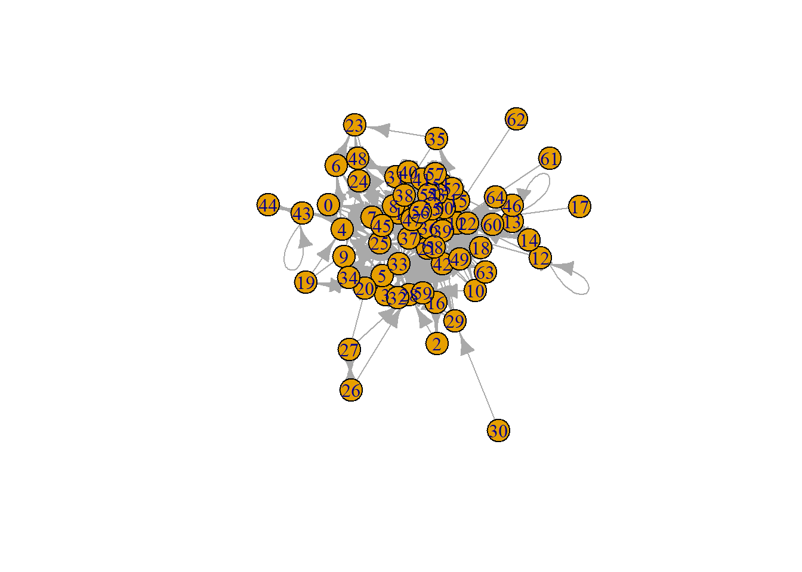
Diese erste Visualisierung ist oft noch unübersichtlich. Das ist normal. Netzwerkvisualisierung ist ein iterativer Prozess: Man startet mit einer einfachen Darstellung und verbessert dann Layout, Labels, Knotenfarben, Knotengrößen und Kanteneigenschaften.
9.1 Labels anpassen
Bei größeren Netzwerken überlappen Labels schnell. Deshalb ist es oft sinnvoll, zunächst keine Labels oder nur kurze Labels zu verwenden.
plot(
g_hp,
vertex.label = NA,
vertex.size = 6,
edge.arrow.size = 0.3
)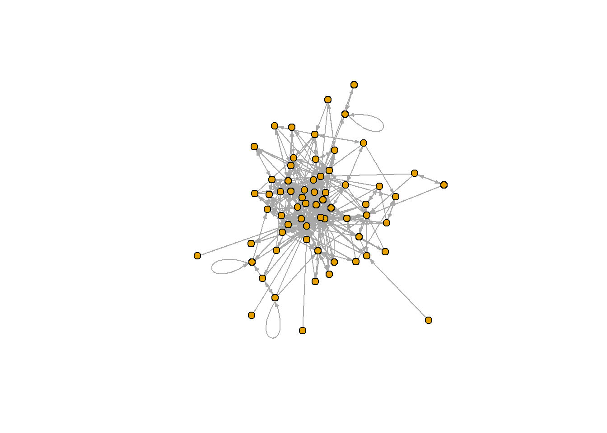
Für kleine oder ausgewählte Netzwerke können Labels aber hilfreich sein.
plot(
g_hp,
vertex.label = V(g_hp)$character,
vertex.label.cex = 0.6,
vertex.size = 6,
edge.arrow.size = 0.3
)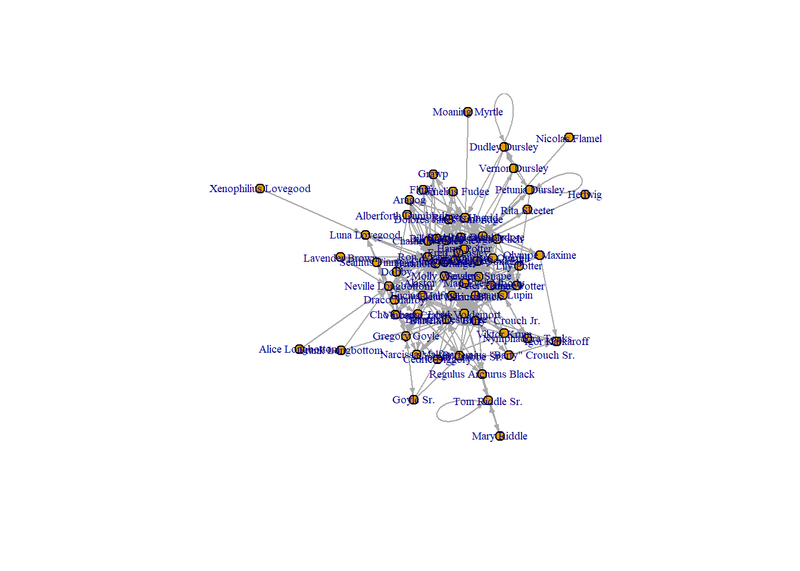
9.2 Layouts
Ein Layout legt fest, wo die Knoten im Diagramm platziert werden. Unterschiedliche Layouts können denselben Graphen sehr unterschiedlich aussehen lassen.
plot(
g_hp,
layout = layout_in_circle(g_hp),
vertex.label = NA,
vertex.size = 6,
edge.arrow.size = 0.3,
main = "Kreis-Layout"
)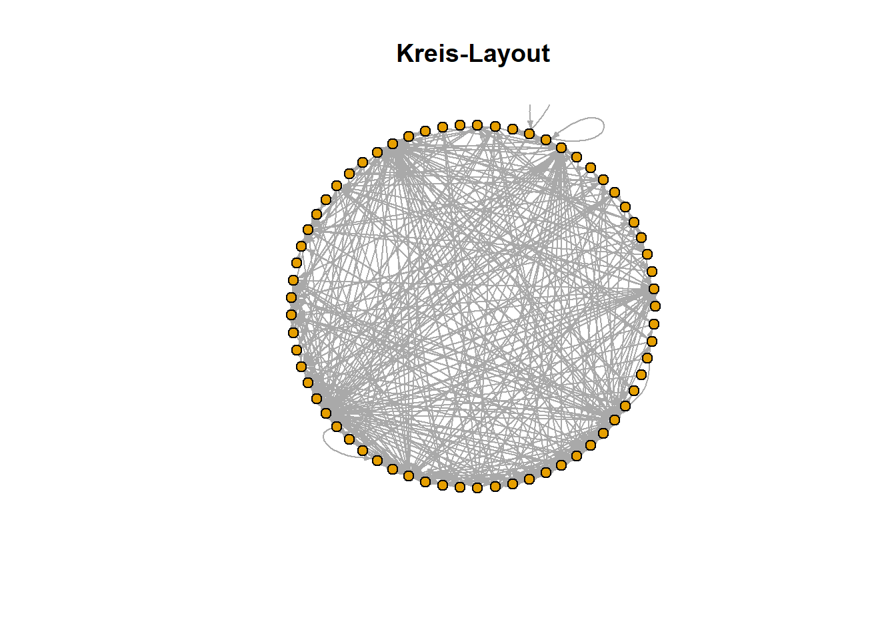
plot(
g_hp,
layout = layout_with_fr(g_hp),
vertex.label = NA,
vertex.size = 6,
edge.arrow.size = 0.3,
main = "Fruchterman-Reingold-Layout"
)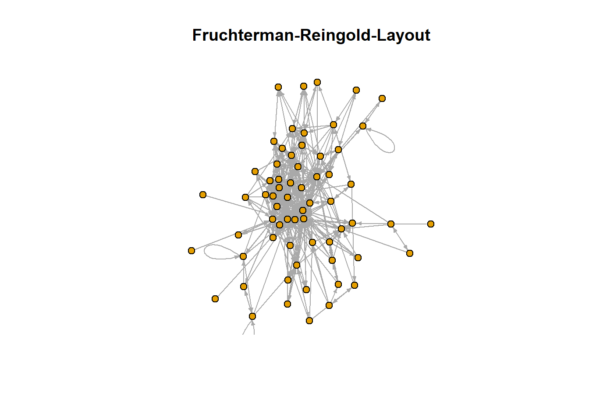
plot(
g_hp,
layout = layout_with_kk(g_hp),
vertex.label = NA,
vertex.size = 6,
edge.arrow.size = 0.3,
main = "Kamada-Kawai-Layout"
)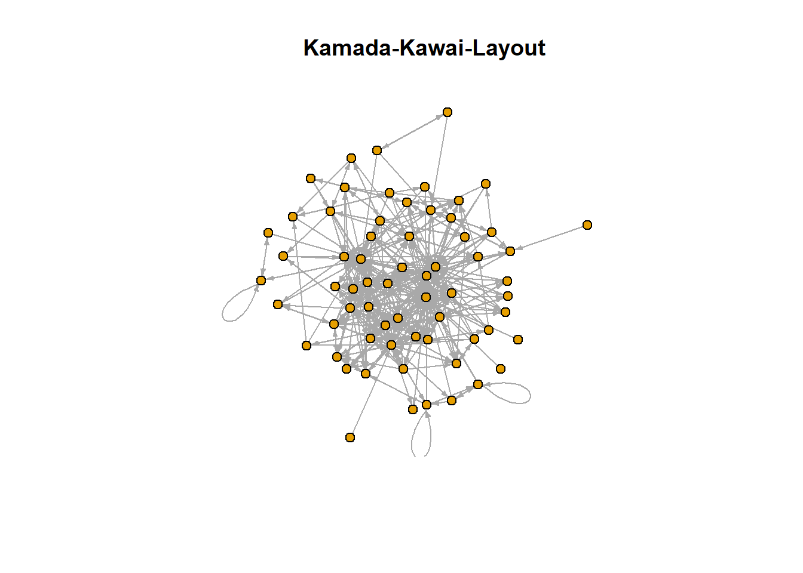
NoteHinweis
Viele Layout-Algorithmen enthalten zufällige Elemente. Wenn eine Grafik reproduzierbar sein soll, kann man vorher set.seed() setzen oder das Layout in einem Objekt speichern.
set.seed(123)
layout_hp <- layout_with_fr(g_hp)
plot(
g_hp,
layout = layout_hp,
vertex.label = NA,
vertex.size = 6,
edge.arrow.size = 0.3
)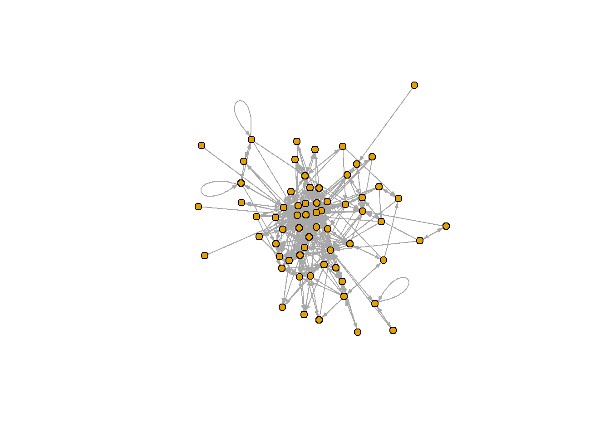
9.3 Knoten nach Attributen einfärben
Die Figuren haben ein Attribut house. Dieses können wir verwenden, um die Knoten einzufärben.
house_farbe <- c(
"Gryffindor" = "firebrick",
"Slytherin" = "darkgreen",
"Ravenclaw" = "steelblue",
"Hufflepuff" = "goldenrod",
"no information" = "grey80"
)
haus <- trimws(V(g_hp)$house)
farben <- unname(house_farbe[haus])
farben[is.na(farben)] <- "grey80"
V(g_hp)$color <- farben
plot(
g_hp,
layout = layout_hp,
vertex.label = NA,
vertex.size = 7,
edge.arrow.size = 0.3
)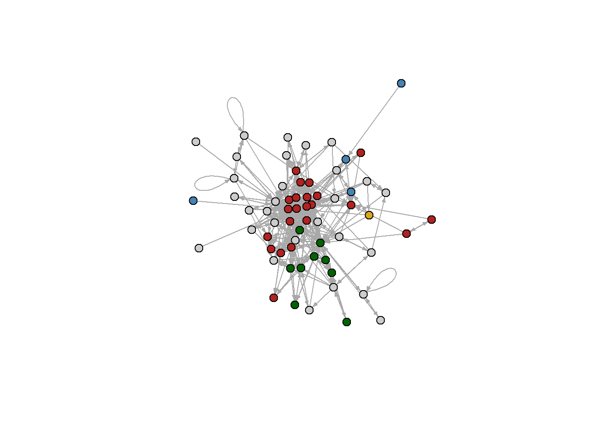
Eine Legende macht die Farbzuordnung verständlicher.
plot(
g_hp,
layout = layout_hp,
vertex.label = NA,
vertex.size = 7,
edge.arrow.size = 0.3
)
legend(
"topleft",
legend = names(house_farbe),
col = house_farbe,
pch = 19,
pt.cex = 1.5,
bty = "n"
)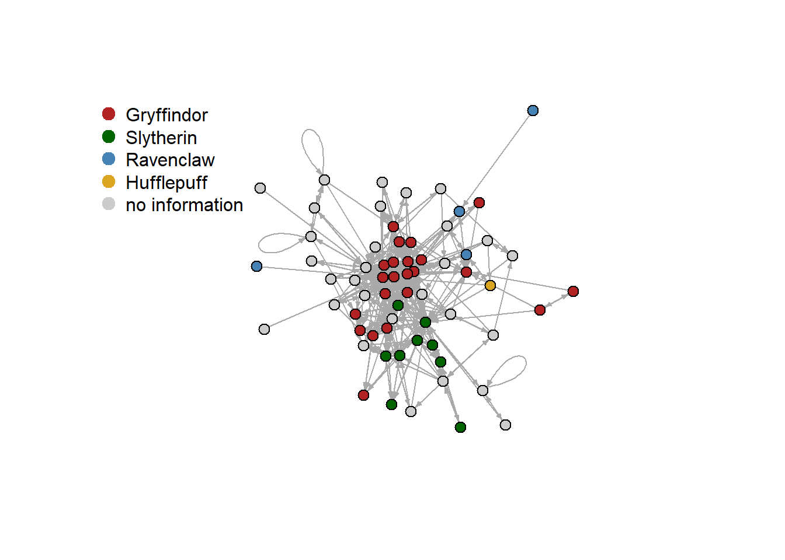
9.4 Knoten nach Grad skalieren
Der Grad eines Knotens gibt an, mit wie vielen Kanten ein Knoten verbunden ist. In gerichteten Netzwerken kann man zwischen eingehenden und ausgehenden Kanten unterscheiden.
grad_gesamt <- degree(g_hp, mode = "all")
grad_ein <- degree(g_hp, mode = "in")
grad_aus <- degree(g_hp, mode = "out")
head(grad_gesamt) 0 1 2 3 4 5
5 31 4 9 11 10 Wir können den Grad verwenden, um zentrale Figuren größer darzustellen.
V(g_hp)$size <- 4 + grad_gesamt * 0.6
plot(
g_hp,
layout = layout_hp,
vertex.label = NA,
vertex.size = V(g_hp)$size,
edge.arrow.size = 0.3
)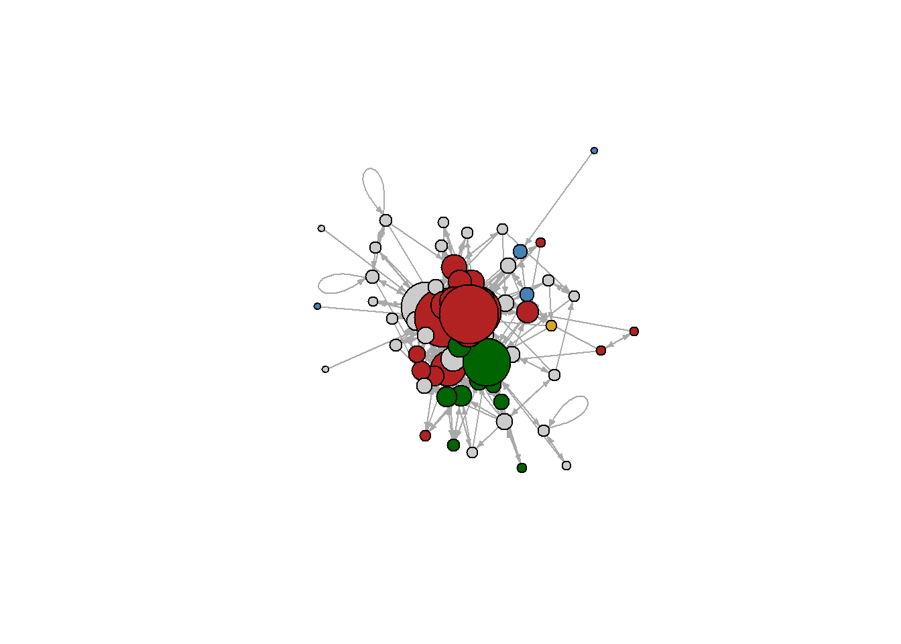
Die größten Knoten sind diejenigen Figuren, die viele Beziehungen im Netzwerk haben.
top_knoten <- data.frame(
figur = V(g_hp)$character,
haus = V(g_hp)$house,
grad = grad_gesamt,
eingehend = grad_ein,
ausgehend = grad_aus
)
top_knoten[order(-top_knoten$grad), ][1:10, ] figur haus grad eingehend ausgehend
39 Harry Potter Gryffindor 56 47 9
58 Ron Weasley Gryffindor 56 23 33
21 Hermione Granger Gryffindor 50 31 19
11 Albus Dumbledore no information 47 18 29
45 Lord Voldemort Slytherin 44 36 8
1 Sirius Black Gryffindor 31 10 21
54 George Weasley Gryffindor 26 12 14
55 Ginny Weasley Gryffindor 26 12 14
53 Fred Weasley Gryffindor 25 11 14
50 Arthur Weasley Gryffindor 24 13 119.5 Kanten nach Beziehungstyp gestalten
Die Kanten haben ein Attribut type. Positive und negative Beziehungen können unterschiedlich dargestellt werden.
E(g_hp)$color <- ifelse(E(g_hp)$type == "+", "darkgreen", "firebrick")
E(g_hp)$lty <- ifelse(E(g_hp)$type == "+", 1, 2)
E(g_hp)$width <- 1 + E(g_hp)$weight
plot(
g_hp,
layout = layout_hp,
vertex.label = NA,
vertex.size = V(g_hp)$size,
edge.arrow.size = 0.3,
edge.curved = 0.2
)
legend(
"topleft",
legend = c("positive Beziehung", "negative Beziehung"),
col = c("darkgreen", "firebrick"),
lty = c(1, 2),
lwd = 2,
bty = "n"
)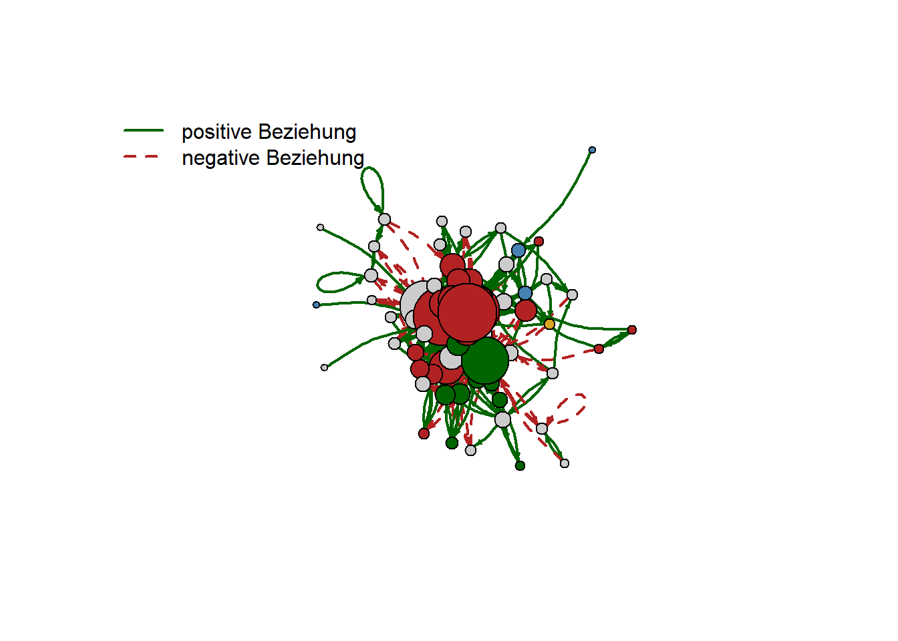
NoteInterpretation
Die Visualisierung zeigt nicht nur, dass Figuren verbunden sind, sondern auch, ob Beziehungen positiv oder negativ sind. Die Kantendicke zeigt, wie häufig eine Beziehung in den Rohdaten vorkommt.
9.6 Teilnetzwerk visualisieren
Bei größeren Netzwerken ist es oft hilfreich, nur einen Ausschnitt zu betrachten. Zum Beispiel können wir die Figuren anzeigen, die zu Gryffindor gehören oder stark mit Gryffindor-Figuren verbunden sind.
Zunächst erzeugen wir ein Teilnetzwerk mit allen Figuren aus Gryffindor.
g_gryffindor <- induced_subgraph(
g_hp,
vids = V(g_hp)[house == "Gryffindor"]
)
g_gryffindorIGRAPH e7c4ac0 DNW- 22 146 --
+ attr: name (v/c), character (v/c), bio (v/c), house (v/c), alive
| (v/c), color (v/c), size (v/n), type (e/c), weight (e/n), color
| (e/c), lty (e/n), width (e/n)
+ edges from e7c4ac0 (vertex names):
[1] 1 ->21 1 ->31 1 ->36 1 ->39 1 ->40 1 ->41 1 ->48 1 ->50 1 ->53 1 ->54
[11] 1 ->55 1 ->58 2 ->21 2 ->28 2 ->58 21->28 21->36 21->39 21->50 21->51
[21] 21->52 21->54 21->56 21->58 22->21 22->28 22->36 22->39 22->58 26->27
[31] 26->28 27->26 27->28 28->21 28->39 28->58 31->1 31->36 31->39 31->40
[41] 31->48 36->21 36->22 36->39 36->58 39->36 39->40 40->1 40->31 40->39
[51] 40->41 41->39 41->40 48->31 50->1 50->21 50->39 50->51 50->52 50->53
+ ... omitted several edgesset.seed(123)
plot(
g_gryffindor,
layout = layout_with_fr(g_gryffindor),
vertex.label = V(g_gryffindor)$character,
vertex.label.cex = 0.7,
vertex.size = 6 + degree(g_gryffindor, mode = "all"),
edge.arrow.size = 0.4,
edge.curved = 0.2,
main = "Teilnetzwerk: Gryffindor"
)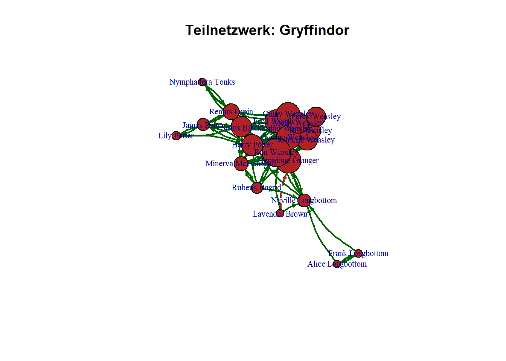
Ein Teilnetzwerk ist oft besser lesbar als das Gesamtnetzwerk.
Im folgenden Schritt wird das ursprüngliche Netzwerk gefiltert.
Mit delete_edges() werden alle Kanten entfernt, deren Gewicht kleiner als 2 ist.
Anschließend wird für das reduzierte Netzwerk erneut der Knotengrad berechnet und ein neues Layout erstellt.
# Nur Kanten mit Gewicht >= 2 behalten
g_stark <- delete_edges(g_hp, E(g_hp)[weight < 2])
set.seed(123)
grad <- degree(g_stark, mode = "all")
l <- layout_with_kk(g_stark)
labels <- ifelse(grad >= 3, V(g_stark)$name, NA)
plot(
g_stark,
layout = l,
vertex.label = V(g_gryffindor)$character,
vertex.size = 5 + sqrt(grad) * 4,
vertex.label = labels,
vertex.label.cex = 0.7,
edge.arrow.size = 0.15,
edge.width = 1,
edge.curved = 0.15,
margin = 0.1,
main = "Stärkere Beziehungen im Harry-Potter-Netzwerk"
)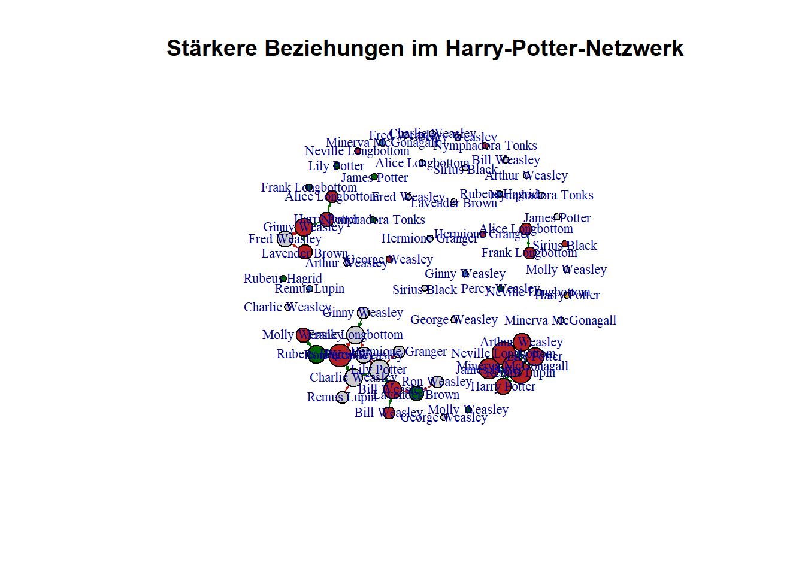
TipGestaltungsregel
Nicht jeder Knoten muss beschriftet werden. Bei größeren Netzwerken ist es oft besser, nur zentrale oder fachlich wichtige Knoten zu beschriften.
9.7 Alternative: Netzwerkvisualisierung mit ggraph
Neben der Basisfunktion plot() aus igraph können Netzwerke auch mit Paketen aus dem ggplot2-Umfeld visualisiert werden.
Dafür eignet sich besonders das Paket ggraph.
Der Vorteil ist, dass die Visualisierung ähnlich wie bei ggplot2 schrittweise aufgebaut und leichter gestaltet werden kann.
library(igraph)
library(ggraph)Warning: Paket 'ggraph' wurde unter R Version 4.4.3 erstelltLade nötiges Paket: ggplot2Warning: Paket 'ggplot2' wurde unter R Version 4.4.3 erstelltlibrary(ggplot2)
# Knotengrad berechnen
grad_gesamt <- degree(g_hp, mode = "all")
# Grad als Knotenattribut speichern
V(g_hp)$grad <- grad_gesamt
# Nur wichtige Knoten beschriften
V(g_hp)$label <- ifelse(
V(g_hp)$grad >= quantile(V(g_hp)$grad, 0.90),
V(g_hp)$character,
""
)
# Netzwerk mit ggraph visualisieren
ggraph(g_hp, layout = "fr") +
geom_edge_link(
aes(width = weight),
alpha = 0.4,
arrow = arrow(length = unit(2, "mm")),
end_cap = circle(2, "mm")
) +
geom_node_point(
aes(size = grad),
color = "firebrick"
) +
geom_node_text(
aes(label = label),
repel = TRUE,
size = 3
) +
scale_edge_width(range = c(0.2, 1.5)) +
scale_size(range = c(2, 10)) +
theme_void()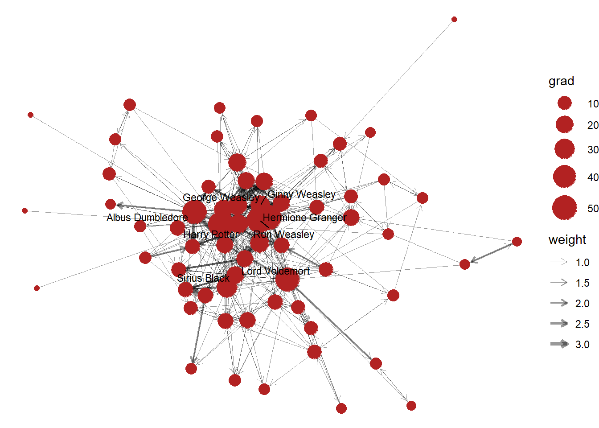
NoteHinweis
ggraph folgt der Logik von ggplot2: Zuerst wird das Netzwerkobjekt übergeben, danach werden Kanten, Knoten und Beschriftungen als eigene Ebenen ergänzt.
TipKernaussage
Mit ggraph lassen sich Netzwerkvisualisierungen flexibler gestalten als mit dem einfachen plot()-Befehl aus igraph, insbesondere wenn Knoten- und Kanteneigenschaften visuell hervorgehoben werden sollen.
9.8 Alternative: Interaktive Netzwerkvisualisierung
Statische Netzwerkvisualisierungen werden bei größeren Netzwerken schnell unübersichtlich.
Ein Grund dafür ist, dass viele Knoten, Kanten und Beschriftungen gleichzeitig angezeigt werden.
Eine Alternative sind interaktive Netzwerkvisualisierungen.
Dabei müssen nicht alle Informationen dauerhaft sichtbar sein. Stattdessen können zusätzliche Informationen bei Bedarf eingeblendet werden, zum Beispiel durch Tooltips.
Für interaktive Netzwerke eignet sich in R unter anderem das Paket visNetwork.
library(igraph)
library(visNetwork)Warning: Paket 'visNetwork' wurde unter R Version 4.4.3 erstellt9.8.1 Vorbereitung der Knotentabelle
visNetwork benötigt zwei Tabellen:
- eine Tabelle für die Knoten,
- eine Tabelle für die Kanten.
Zunächst wird aus dem igraph-Objekt eine Knotentabelle erzeugt.
# Knotengrad berechnen
grad_gesamt <- degree(g_hp, mode = "all")
# Knotentabelle für visNetwork erstellen
nodes <- data.frame(
id = V(g_hp)$name,
# Nur besonders wichtige Knoten direkt beschriften
label = ifelse(
grad_gesamt >= quantile(grad_gesamt, 0.90),
V(g_hp)$character,
""
),
# Tooltip: wird angezeigt, wenn man mit der Maus über einen Knoten fährt
title = paste0(
"<b>", V(g_hp)$character, "</b><br>",
"Grad: ", grad_gesamt
),
# value beeinflusst die Knotengröße
value = grad_gesamt
)Die Spalte label enthält die Beschriftung, die direkt im Netzwerk angezeigt wird.
Hier werden nur die wichtigsten Knoten beschriftet, nämlich diejenigen mit einem Grad im oberen 10-Prozent-Bereich.
Die Spalte title enthält den Text für den Tooltip.
Dieser erscheint erst, wenn man mit der Maus über einen Knoten fährt.
TipKernaussage
In interaktiven Netzwerken können Informationen ausgeblendet und erst bei Bedarf sichtbar gemacht werden. Dadurch bleibt die Darstellung übersichtlicher.
9.8.2 Vorbereitung der Kantentabelle
Nun wird aus dem igraph-Objekt eine Kantentabelle erzeugt.
# Kantentabelle aus dem igraph-Objekt erzeugen
edges <- as_data_frame(g_hp, what = "edges")
# visNetwork erwartet die Spaltennamen from und to
names(edges)[names(edges) == "source"] <- "from"
names(edges)[names(edges) == "target"] <- "to"Falls die Kanten ein Gewicht besitzen, kann dieses ebenfalls für die Darstellung und als Tooltip verwendet werden.
# Falls Kantengewichte vorhanden sind, werden sie im Tooltip angezeigt
if ("weight" %in% names(edges)) {
edges$title <- paste("Gewicht:", edges$weight)
edges$value <- edges$weight
}Die Spalte value kann von visNetwork genutzt werden, um stärkere Kanten größer oder auffälliger darzustellen.
9.8.3 Interaktive Visualisierung
Nun können Knoten- und Kantentabelle an visNetwork() übergeben werden.
NoteHinweis
Tooltips funktionieren nur in interaktiven HTML-Ausgaben.
Für statische Ausgaben wie PDF oder gedruckte Skripte bleiben sie nicht erhalten.
Bei visNetwork wird das Layout häufig durch eine Physik-Simulation berechnet.
Dadurch bewegen sich die Knoten zunächst, bis das Netzwerk eine stabile Anordnung gefunden hat.
Für eine ruhigere Darstellung kann man das Netzwerk erst stabilisieren lassen und anschließend die Physik ausschalten.
visNetwork(nodes, edges) |>
visNodes(shape = "dot") |>
visEdges(
arrows = "to",
smooth = TRUE
) |>
visOptions(
highlightNearest = TRUE
) |>
visInteraction(
hover = TRUE,
tooltipDelay = 100
) |>
visPhysics(
stabilization = TRUE,
solver = "forceAtlas2Based"
) |>
visEvents(
stabilized = "function () {this.setOptions({physics: false});}"
)
TipHinweis
Wenn ein interaktives Netzwerk „wackelt“, liegt das meist an der aktivierten Physik-Simulation. Durch Stabilisierung und anschließendes Ausschalten der Physik bleibt die Darstellung ruhig.
9.8.4 Zusammenfassung
Interaktive Netzwerkvisualisierungen sind besonders hilfreich, wenn ein Netzwerk viele Knoten oder Kanten enthält.Sie ersetzen nicht die analytische Auswertung des Netzwerks, können aber helfen, Strukturen explorativ zu untersuchen.
9.9 Übung: Netzwerkdaten aus CSV-Dateien einlesen
Verwenden Sie die Dateien characters.csv und relations.csv.
- Lesen Sie beide Dateien mit
read.csv()ein. - Geben Sie mit
head()die ersten Zeilen beider Tabellen aus. - Prüfen Sie, ob alle IDs in der Kantendatei auch in der Knotendatei vorkommen.
- Prüfen Sie, ob es doppelte Kanten gibt.
- Verdichten Sie doppelte Kanten nach
source,targetundtype. - Erzeugen Sie mit
graph_from_data_frame()ein gerichtetesigraph-Objekt. - Speichern Sie ein Layout mit
layout_with_fr(). - Visualisieren Sie das Netzwerk ohne Labels.
- Färben Sie positive und negative Kanten unterschiedlich ein.
- Stellen Sie Knoten mit hohem Grad größer dar.
9.10 Lösungsskizze
# Daten einlesen
characters <- read.csv("characters.csv", header = TRUE, as.is = TRUE)
relations <- read.csv("relations.csv", header = TRUE, as.is = TRUE)
characters$house <- trimws(characters$house)
characters$alive <- trimws(characters$alive)
relations$type <- trimws(relations$type)
# Daten prüfen
head(characters) id name
1 0 Regulus Arcturus Black
2 1 Sirius Black
3 2 Lavender Brown
4 3 Cho Chang
5 4 Vincent Crabbe Sr.
6 5 Vincent Crabbe
bio
1 Brother of Sirius. Used to be a Death Eater but defected.
2 Best friend of James Potter and godfather of Harry.
3 Killed by a werewolf. She was a gryffindor student who dated Ron.
4 Ravenclaw student who dated Cedric Diggory and Harry Potter.
5 Father of Crabbe and death-eater who escaped Azkaban.
6 Slytherin student who was best friends with Goyle and followed Draco.
house alive
1 no information no information
2 Gryffindor False
3 Gryffindor False
4 Ravenclaw True
5 no information no information
6 Slytherin Falsehead(relations) source target type
1 0 1 -
2 0 25 -
3 0 45 -
4 1 0 -
5 1 11 +
6 1 21 +setdiff(
as.character(unique(c(relations$source, relations$target))),
as.character(characters$id)
)character(0)nrow(relations)[1] 513nrow(unique(relations[, c("source", "target")]))[1] 456# Doppelte Kanten verdichten
relations_gewichtet <- aggregate(
x = list(weight = rep(1, nrow(relations))),
by = list(
source = relations$source,
target = relations$target,
type = relations$type
),
FUN = sum
)
# Knotendaten vorbereiten
characters_igraph <- data.frame(
name = as.character(characters$id),
character = characters$name,
bio = characters$bio,
house = characters$house,
alive = characters$alive
)
relations_gewichtet$source <- as.character(relations_gewichtet$source)
relations_gewichtet$target <- as.character(relations_gewichtet$target)
# Netzwerk erzeugen
g_hp <- graph_from_data_frame(
d = relations_gewichtet,
vertices = characters_igraph,
directed = TRUE
)
# Gestaltung
set.seed(123)
layout_hp <- layout_with_fr(g_hp)
grad_gesamt <- degree(g_hp, mode = "all")
V(g_hp)$size <- 4 + grad_gesamt * 0.6
E(g_hp)$color <- ifelse(E(g_hp)$type == "+", "darkgreen", "firebrick")
E(g_hp)$lty <- ifelse(E(g_hp)$type == "+", 1, 2)
E(g_hp)$width <- 1 + E(g_hp)$weight
# Visualisierung
plot(
g_hp,
layout = layout_hp,
vertex.label = NA,
vertex.size = V(g_hp)$size,
edge.arrow.size = 0.3,
edge.curved = 0.2
)
legend(
"topleft",
legend = c("positive Beziehung", "negative Beziehung"),
col = c("darkgreen", "firebrick"),
lty = c(1, 2),
lwd = 2,
bty = "n"
)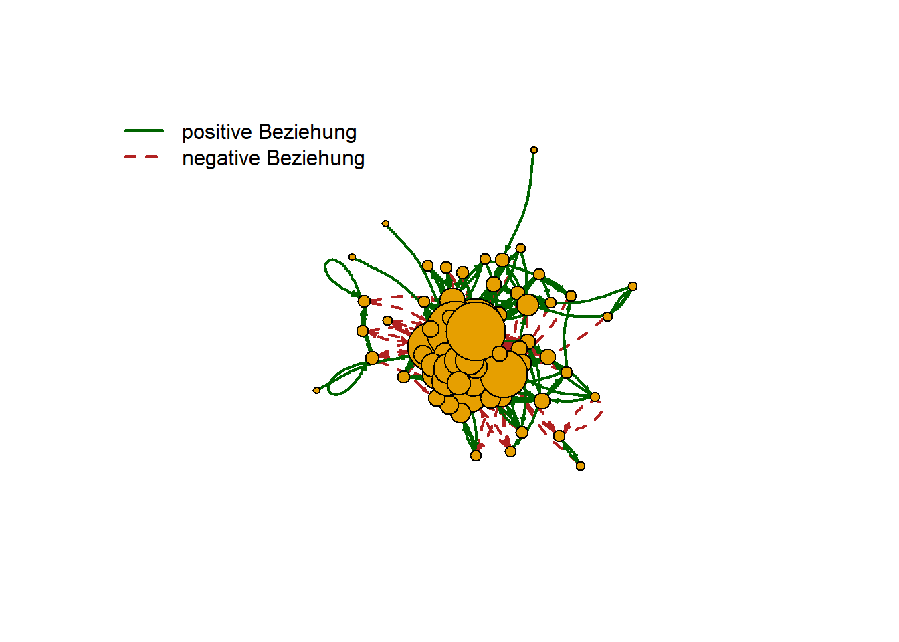
9.11 Zusammenfassung
Netzwerkdaten können auf verschiedene Arten repräsentiert werden. Für das Einlesen aus Dateien ist die Kombination aus Knotenliste und Kantenliste besonders wichtig.
Die typische Verarbeitungskette lautet:
- Knoten- und Kantendatei einlesen,
- Daten prüfen,
- doppelte Kanten verdichten,
- Knoten- und Kantenattribute vorbereiten,
- Netzwerkobjekt mit
graph_from_data_frame()erzeugen, - Layout berechnen,
- Netzwerk visualisieren und interpretieren.
TipMerksatz
Eine gute Netzwerkvisualisierung beginnt nicht mit plot(), sondern mit sauber vorbereiteten Netzwerkdaten.